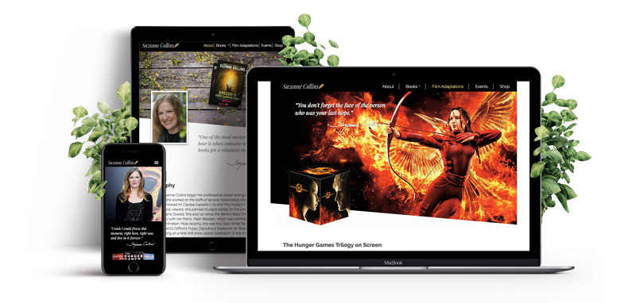
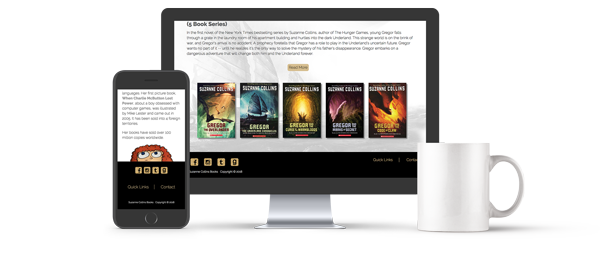

Restyling Project
Suzanne Collins Website
This restyling project was realized with a group of three. We created a responsive, more user-friendly design for the existing website of the American author Suzanne Collins.
Tasks for this project included:
Needs analysis
Creating user personas
Card sort
Reverse card sort
Creating mood boards
Creating high fidelity prototypes
Coding the page with HTML, CSS and JavaScript
Since the project’s sole purpose was the restyling and hand coding of a website, we used images from the internet (based on the Fair Use Act) that we felt were relevant and necessary to give the restyled website more character and elegance.

Visit restyled page
At a Glance
We chose the website of Suzanne Collins because it had a poor layout, it was out-dated, non-responsive, and very text heavy. The images were all over the place and of poor quality. Overall, it was not reflective of her being a famous author. The goal was to create a website that is more elegant, user-friendly and a better reflection of who Suzanne Collins is.
